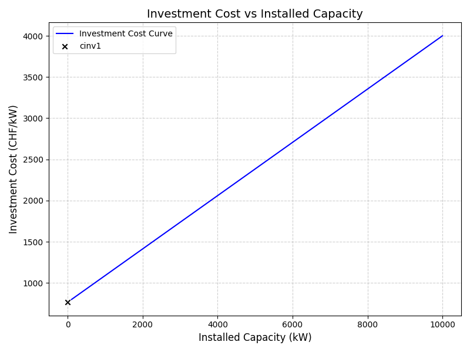
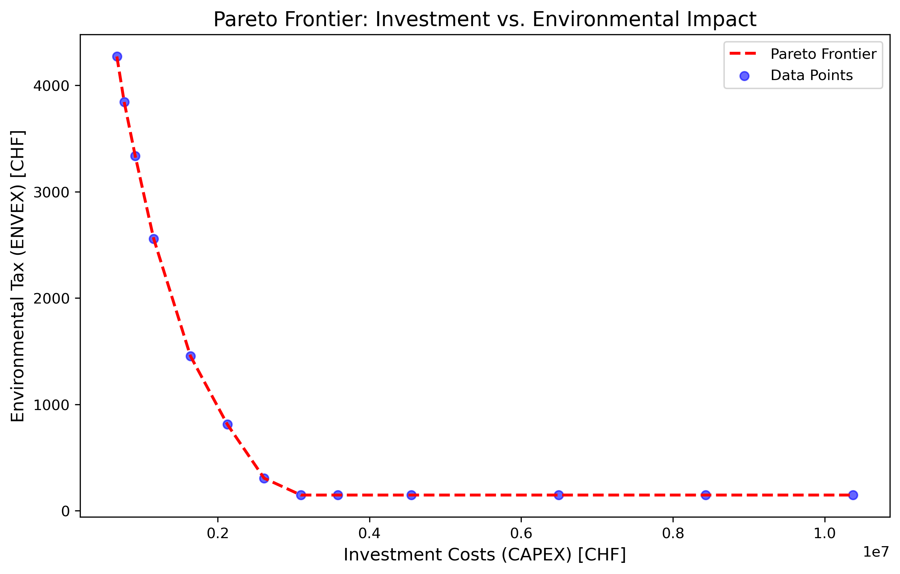
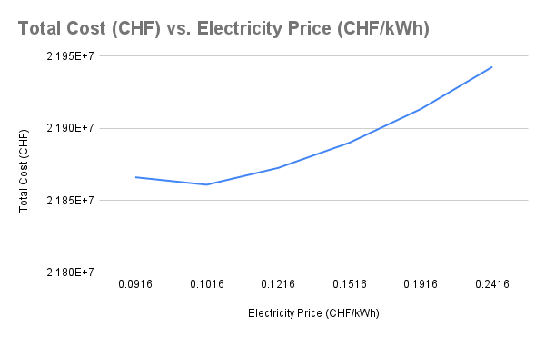

5.1 Introduction
The finale part of the report concerns itself with the implementation of various technologies in the EPFL heating system. Using mixed integer linear programming (MILP), a model will be build to choose the best combination of utilities for different scenarios. After the different scenarios have been analysed, a multi-objective optimisation will be executed. Finally, a sensitivity analysis will be conducted to analysis how the solution varies with changing paramters.
5.2 Energy conversion technologies
The following introduced energy conversion technologies will be considered for the new heating system of EPFL. The utilities will be briefly described and then their implimentation in the AMPL model will be presented.
5.2.1 Cogeneration
A cogeneration enigne, aslo known as combined heat and power (CHP), uses one fuel source to produce heat and power. By producing both heat and power, the CHP saves greenhouse emissions compared to a seperate unit. For this model, natural gas is considered as the fuel of this unit. In a gas turbine,the natural gas is mixed with air, compressed and then ignited. A generator produces electricity and through a heat recovery steam generator the hot water loop of the EPFL is also heated.
This unit will be sized such that the electricity demand of the campus at a given time is fulfilled.
Here are the assumptions for the modeling of the utility:
lifetime is assumed to be 20 years
Thermal efficiency \(\eta_{thermal} = 0.45\) and electrical efficiency \(\eta_{elec} = 0.45\), such that the unit has a total efficiency of \(\eta_{chp} = \eta_{thermal} + \eta_{elec} = 0.8\) (Ken Darrow and Hampson (2017))
From Professors Maréchal’s lecture in Advanced Energetics about Utility integration, the costs for the sizing are given. For an installed capacity between 100 - 10 000 kW, the CAPEX ranges from 800 - 4000 CHF/kW. From this the fixed part (cinv1) and variable part (cinv2) of the investment has been extracted.
5.2.2 Fuel cells
Solid oxide fuel cells (SOFC) are electrochemical devices that convert the chemical energy of fuel into electrical energy. They normally operate in the range of 500-800°C. Heat can be recovered from the high temperature exhaust gas of SOFC, thereby increasing the energy efficiency of process (Roy et al. 2024).
Fuel cells hold the promise of power generation with higher efficiency and lower pollution. They offer superior performance compared to heat engines, partly due to the fact that these devices can bypass the limitations imposed by carnot efficiecny (Roy et al. 2024). The higher efficiency of these devices also mean that the greenhouse gas emission can be significantly reduced (Pina et al. 2023). Another advantage of fuel cells is the fuel flexibility. They can be operated with a wide variety of fuels such as natural gas, ammonia, hydrogen, biogas etc (Pina et al. 2023; Roy et al. 2024).
The system is usually made up of SOFC stack and Balance of Plant components (BoP). The BoP include blowers or compressors for air and fuel, combustor to completely burn the fuel and heat exchangers to recover heat from the exhaust gases. Pina et al. (2023), compared the performance of SOFC utilizing five different fuels (methane, methanol, diesel, ammonia and hydrogen) for cruise ships. They showed that by cathode off-gas recirculation (COGR), the investment costs for the SOFC unit are reduced. Further with COGR, the amount of air required for each fuel type reduced, which resulted in higher quality exhaust gas at combustor outlet.
For the modeling of fuel cells, a black box model is used. The fuel cell is modeled as single 100 kW unit, and it is assumed that these 100 kW units will be stacked together to provide the energy demand of the campus. Hydrogen is the fuel selected to operate the fuel cells despite it being the most expensive fuel in Pina’s studies. The decision to study hydrogen is based on its low environmental impact (depending on the source of hydrogen it can be completely carbon neutral). The following efficiencies are used to model the fuel cell (Pina et al. 2023):
- Electrical efficiency \(\eta_{\mathrm{elec}}\) = 0.4676. In their paper, Pina defined the efficiency to be 0.49. However, because here the fuel cell is modeled as black box and we are only interested in finding how much net electrical power could be obtained this value was reduced to account for electrical energy needed for BoP components.
- Thermal efficiency \(\eta_{\mathrm{thermal}}\) = 0.4117. The thermal efficiency is based on how much heat was recoverd in Pina’s paper to how much fuel flow into the system.
Based on the data from Pina (Pina et al. 2023), the following costs are estimated for a single 100 kW module:
- Fixed investment costs : \(\mathrm{c_{inv1}}\) = 0 CHF/year
- Variable investment costs : \(\mathrm{c_{inv2}}\) = 101,886 CHF/year
The variable costs also include the costs for stack replacement assuming stack lifetime of 5 year. The model estimates the number of stacks required to meet the energy demand of campus.
5.2.3 PV panels
Photovoltaic (PV) systems provide a renewable energy source by converting solar radiation into electricity using silicon-based solar cells. With typical efficiencies around \(\eta = 0.18\), these systems are scalable from small residential setups to large utility-scale installations.
Key characteristics include:
Annual Degradation: Approximately 0.5% (\(\mathrm{degradation} = 0.005\)), affecting long-term performance.
Area Requirement: About 7 m\(^2\) per kilowatt of capacity.
Capacity Factor: Generally around 0.15 in moderate solar resource locations.
Lifespan: PV panels typically have a lifespan of 25 years or more.
Investment Costs: -
Fixed investment cost: \(c_{\text{inv1}} = 143.28 \text{ CHF}\)
Variable investment cost: \(c_{\text{inv2}} = 457.59 \text{ CHF/kW}\)
Operational and maintenance costs are relatively low, estimated at about \(10 \text{ CHF/kW/year}\).
From an environmental perspective, PV systems produce no direct emissions during operation, with lifecycle emissions from manufacturing estimated at \(40 \text{ kg CO}_2\text{eq/kW}\). This positions PV as a key technology for reducing carbon footprints in energy systems.
5.2.4 Boiler
A boiler uses natural gas as a heat source for heating water or other fluids. The heated fluid can then be used either as a heat source, as for instance in water bearing systems or in other applications.
The heat provided by the fuel needed to obtain the wanted heat supply is calculated as following:
\(\mathrm{Q{fuel} [W]= Q_{heating supply}/ \eta_{boiler}}\), where \(\eta_{boiler}\) is given as 0.9 (Stadler et al. 2018).
The cost of installing a boiler is given by a fixed cost and an installation cost:
\(\mathrm{CAPEX_{boiler}[CHF]= c_{fixed} + c_{variable}*S}\) given in [CHF]
where
- \(\mathrm{S}\) - installed capcity of the boiler given in [kW]
- \(\mathrm{c_{fixed}}\)= 79750 CHF
- \(\mathrm{c_{variable}}\)= 288.62 CHF/kW
5.2.5 Electric boiler
Electric boilers offer a promising alternative to traditional natural gas boilers in energy systems. By using electricity to heat water via electrode systems, electric boilers provide controlled output from 0 to 100% of their nominal capacity, making them highly flexible for auxiliary services or leveraging spot market electricity prices (Agency 2019).
These devices, typically in the megawatt size range, are suitable for district heating systems, producing hot water or steam. Like natural gas boilers, electric boilers are often used as peak load units, but they do not rely on fossil fuels. This electrification could contributes significantly to reducing carbon emissions in scenarios targeting minimal environmental impact.
Electric boilers also demonstrate a high conversion efficiency from electrical to thermal energy, with efficiencies reaching \(\eta = 0.99\) (Soysal et al. 2016). This efficiency allows a lower minimum temperature set point of \(T_{\text{min}} = 70^\circ\text{C}\) (Jiang et al. 2013). However, from an exergy perspective, their efficiency is moderate, emphasizing the importance of context in evaluating their effectiveness.
Although uncertainty remains in the potential installed capacity, electrode boilers connected to medium- or high-voltage grids (at 10 kV) can achieve production capacities of several megawatts. For this project, an installed capacity of at least 10 MW is assumed, with a lifetime of 20 years (Agency 2019).
Investment costs are influenced by electricity prices and installation specifics. Based on average installation costs (Graham 2022) and nominal investments (Soysal et al. 2016), the following costs are estimated:
Fixed investment cost: \(c_{\text{inv1}} = 435.92 \, \text{CHF/year}\)
Variable investment cost: \(c_{\text{inv2}} = 75,000 \, \text{CHF/year}\)
These estimates provide a baseline for integrating electric boilers into energy optimization models, considering both economic and environmental impacts.
5.3 Integration of heat recovery from NLP model
In Chapter 3, various heat integration options were evaluated using a non linear model. From the evaluated concepts, ventilation heat recovery with heat pump was deemed as most suitable in terms of energy savings and environmental impact.
For integration of ventilation with heat pump, the temperature results from the AMPL model (Table 3.9) are sent as parameters to the full AMPL model. This way, the heat exchanger area can be modeled as linear function of heat exchanged. Next, the costs of both heat exchanger and heat pump are linearized as shown in Figure 5.2, Figure 5.3 respectively. The cost parameters are reported in Table 5.3.
5.4 MILP optimisation of the EPFL energy system
A mixed integer linear programming (MILP) optimization problem is set up to determine the combination of technologies that will provide for the energy demand of the campus. Table 5.1, and 5.2 provides details of all the sets, parameters and variables used in the MILP model.
5.4.1 Objective function
The objective function of the MILP problem is to minimize the total expenditure per year (TOTEX). TOTEX is defined by eq 5.1:
\[ \mathrm{\min TOTEX = w_{CAPEX} \cdot CAPEX + w_{OPEX} \cdot OPEX + w_{ENVEX} \cdot ENVEX \ [\frac{CHF}{year}]} \tag{5.1}\]
5.4.2 Model equations
The equations used to set up the MILP model are defined below. For the description of variables used in the following equations, see Table 5.1 and Table 5.2.
- Building heating demand - The heating demand of each building is calculated using eq 5.2 \[ \mathrm{\dot{Q}_{b,t}^{heating} = A^{th}_{b} (U_{b}^{env}(T_{int} - T_{ext_t}) + m_{air}C_{p,air}(T_{int} - T_{ext,new_{t}}) - k_b^{sun}\cdot I_t - \dot{Q}_b^{people} - f_{el}\dot{E}_b)} \tag{5.2}\]
The total heating demand for each level in each time period given by eq 5.3, eq 5.4: \[ \mathrm{\dot{Q}mt_t^- = \sum_b^{MB} \dot{Q}_{b,t}^{heating}} \tag{5.3}\]
\[ \mathrm{\dot{Q}lt_t^- = \sum_b^{MB} \dot{Q}_{b,t}^{heating}} \tag{5.4}\]
- Ventilation heat recovery - The amount of heat recovered from ventilation air is given by eq 5.5: \[ \mathrm{Q_{vent} = \sum_b^B m_{air,out}C_{p_{air}}\cdot(T_{int}-T_{release_t})\cdot A_b^{th}} \tag{5.5}\]
The heat exchanger area required for ventilation heat recovery is given by eq 5.6. Note that, because the temperatures are imported from NLP part, only \(\mathrm{Q_{vent}}\) is a variable in the equation and thus the equation acts as a linear equation. \[ \mathrm{A_{vent} \geq \frac{Q_{vent_t}}{U_{vent}\cdot \Delta T_{vent}}} \tag{5.6}\]
Ventilation heat pump - The amount of electrical energy required for heat pump is calculated using eq 5.7. The duty for condeser and evaporator of heat pump are calculated using eq 3.34 and eq 3.35 respectively. \[ \mathrm{E^{HP}_t = Q^{cond2}_t - Q_t^{evap}} \tag{5.7}\]
Sizing variables - The purchase size of utilities and the capacity at which they are used at any given time are related to the binary variable y, which determine the existence and whether or not a utility is installed at a given time, eq 5.8 and eq 5.9. Eq 5.10 ensures that the usage of a utility does not exceed the installation size. \[ \mathrm{f_u^{min} \cdot y_u \leq f_u \leq f_u^{max} \cdot y_u} \tag{5.8}\]
\[ \mathrm{f_{u,t}^{min} \cdot y_{u,t} \leq f_{u,t} \leq f_{u,t}^{max} \cdot y_{u,t}} \tag{5.9}\]
\[ \mathrm{f_{u,t} \leq f_u} \tag{5.10}\]
To ensure that the ventilation heat exchanger and heat pump are used for all time periods, in the AMPL model the above constraints are added with conditional statements and are valid as long as the utility under consideration is not heat pump or heat exchanger. For heat pump and heat exchanger, the sizing factors are simply equated to equipment size.
- Heat balance - The heat balance equation for both the low and medium temperature network are given by eq 5.11 and eq 5.12 respectively.
\[ \mathrm{\dot{Q}lt_t^- = \sum_u^{UT_{ty}} h_{u,t,tl} \cdot q_{u}^{hs} \hspace{1cm} \forall \ t \in \mathbf{T}, T_{mt} \leq T_u, \ ty = 'Heating' } \tag{5.11}\]
\[ \mathrm{\dot{Q}mt_t^- = \sum_u^{UT_{ty}} h_{u,t,tl} \cdot q_{u}^{hs} \hspace{1cm} \forall \ t \in \mathbf{T}, T_{mt} \leq T_u, \ ty = 'Heating' } \tag{5.12}\]
The size of utility is is then determined by summing up h over the set of temperature levels by using eq 5.13 \[ \mathrm{f_{u,t} = \sum^{TL} h_{u,t,tl} \hspace{1cm} \forall \ t \in \mathbf{T}, \ u \in U} \tag{5.13}\]
- Resource balances - For the electricity and other resources (natural gas and hydrogen in this case), the electricity or fuel flow in and out is calculated using eq 5.14 and eq 5.15 respectively.
\[ \mathrm{\dot{M}_{u,t}^{in} = f_{u,t} \cdot m_u^{in} \hspace{1cm} \forall \ t \in \mathbf{T}} \tag{5.14}\]
\[ \mathrm{\dot{M}_{u,t}^{out} = f_{u,t} \cdot m_u^{out} \hspace{1cm} \forall \ t \in \mathbf{T}} \tag{5.15}\]
The balance for electricity and other resources is given by eq 5.16, eq 5.17. \[ \mathrm{\dot{E}_t^- + \sum_u^{UL_l} \dot{M}_{u,t}^{in} = \sum_u^{UL_l} \dot{M}_{u,t}^{out} \hspace{1cm} \forall \ t \in \mathbf{T}; l = 'Electricity'} \tag{5.16}\]
\[ \mathrm{\sum_u^{UL_l} \dot{M}_{u,t}^{in} = \sum_u^{UL_l} \dot{M}_{u,t}^{out} \hspace{1cm} \forall \ t \in \mathbf{T}; l \neq 'Electricity'} \tag{5.17}\]
- Investment costs - The investment costs are given by eq 5.18. The investment costs are linearized for each technology and are summarized in Table 5.3 \[ \mathrm{CAPEX = \sum_u^{TC} (C_{TC}^{inv1} \cdot y_u + C_{TC}^{inv2} \cdot f_u)} \tag{5.18}\]
Operational costs - The operational costs over the year are given by eq 5.19. \[ \mathrm{OPEX = \sum_u^{U} \sum_{t=1}^T (C_{u,t}^{op1} \cdot y_{u,t} + C_{u,t}^{op2} \cdot f_{u,t}) \cdot t^{op}[t]} \tag{5.19}\]
Environmental costs - The environmental costs (CO\(_{2}\) tax) is calculated using eq 5.20 \[ \mathrm{ENVEX = CO_2^+ \gamma^{CO_2^+}} \tag{5.20}\]
CO\(_{2}\) emissions - The amount of CO\(_2\) emitted during a year is given by eq 5.21. The value for parameter \(\epsilon_g^{CO_2}\) is given in Table 5.4. \[ \mathrm{CO_2^+ = \sum_g^G \sum_{t=1}^T f_{g,t} \cdot \epsilon_g^{CO_2}} \tag{5.21}\]
5.4.3 MILP results
This section presents the results for base case model. In the base case the weights associated with each cost element is set to 1 in eq 5.1. Figure 5.4 shows the heating demand for buildings for each typical period. As expected, the maximum heat demand is during the extreme period and it becomes lower when the temperature and irradiation is higher.
The optimal cost for meeting the heating demand of EPFL campus with the installation of new technologies is 2 261 368 \(\frac{\mathrm{CHF}}{\mathrm{year}}\). The breakdown of TOTEX is:
- Investment cost = 671 508 \(\frac{\mathrm{CHF}}{\mathrm{year}}\).
- Operational cost = 1 585 234 \(\frac{\mathrm{CHF}}{\mathrm{year}}\).
- Environment cost = 4 626 \(\frac{\mathrm{CHF}}{\mathrm{year}}\).
Table 5.5 lists the technologies considered for energy system along with their installed capacity and annualized costs. Figure 5.5 shows the usage of each technology for each typical period.
A few remarks about the optimal solution are listed below:
- It is interesting to note that the PV panels are not included in the optimum solution. Possible reasoning for the exclusion of PV panels is the high investment costs associated with them.
- Solid oxide fuel cell is also not part of the optimal solution. This was expected as the initial investment associated with fuel cells is very high. Also, in the model the fuel cells are operated on hydrogen, which compared to natural gas is quite expensive.
- For cogeneration, maximum capacity has been selected by optimizer. This has to do with the fact that cogeneration is very effective technology and can provide both electrical and thermal energy. Looking at Figure 5.5 we can see that cogeneration is used in all periods. For periods with low heating demand i.e. period 1 and 3 it is preferred over boiler, as it can provide electrical energy as well.
- The installed capacity of electrical boiler is the largest of all technologies considered. However, the EB are only for the extreme period (period 4), where the installed capacity of boiler and cogeneration unit is insufficient to meet the campus demands. Perhaps, if the maximum capacity of cogeneration and boiler units were higher, electric boiler will not even be part of optimal solution.
5.5 Scenario analysis
A scenario analysis explores and evaluates the influence of possible future events and its implications on todays descisions. In this report, three potential futures will be examined using scenario analysis. For each scenario, the objective function within the MILP optimization model will be adjusted to appropriately reflect the varying priorities and outcomes.
5.5.1 Scenario 1: Minimize operating costs
In this scenario, EPFL currently operates with a significant budget, allowing for substantial capital investments. However, projections suggest that this economic flexibility will be significantly reduced in the coming years due to a financial crisis. This anticipated shift necessitates a strategic approach to planning the future heating system of EPFL, with an emphasis on ensuring long-term operating costs are sufficiently low to support the institution’s economic sustainability.
To reflect this scenario in the MILP model, the objective function is adjusted so that it minimizes the operating costs. This approach acknowledges that while short-term spending flexibility exists, it must be utilized to mitigate the impacts of future budgetary restrictions. Table 5.6 shows the technologies and their installed capacities. A boiler, a cogeneration engine and PV panels will be installed with the mentioned capacities. In this scenario, most of the heat capacity will come from the boiler, due to the fact that the unit cost of natural gas is quite low compared to other resources.
Key performance indicators when trying to minimise the OPEX, are shown in Table 5.7. Compared to results discussed in Section 5.4.3 ,both the CAPEX and ENVEX are higher, as the objective mainly prioritises minimization of operating costs.
5.5.2 Scenario 2: Rising natural gas prices and climate protests
The second scenario examines a future where the price of natural gas has significantly increased, making it a less economically viable heating source for EPFL. In addition, climate activists strongly advocate for a transition away from natural gas due to its environmental impact, urging institutions like EPFL to adopt more sustainable energy solutions. In response to these pressures, EPFL aims to minimize its reliance on natural gas, aligning with both economic and environmental goals.
To reflect this scenario in the model, the objective function is adjusted to minimize the use of natural gas. This change not only addresses the financial implications of rising energy costs but also supports EPFL’s commitment to reducing its carbon footprint. By prioritizing alternative energy sources and optimizing the heating system, the model will identify strategies to limit natural gas consumption while maintaining operational efficiency.
The objective function used for this optimisation is to minimize ENVEX, which is the cost related to the environmental impact of a utility. Here PV, cogeneration, SOFC and an electric boiler will be installed as indicated by Table 5.8. Most of the heat will be provided from the electric boiler.
Table 5.9 shows the key performance indicators when the objective is to minimize environmental impact. Both the CAPEX and the OPEX are significantly larger in this case compared to scenario 1 and the ENVEX is about 1/5. This is reasonable since the objective function in this case does not prioritise the minimisation of the operational and investment costs.
5.5.3 Scenario 3: Capital investment restrictions
In the third scenario, EPFL faces severe financial limitations, making it difficult to allocate funds for large capital investments. As a result, the institution’s immediate focus shifts to minimizing the costs of installing new technologies, particularly those related to energy systems.
To model this scenario in the AMPL model, the objective function is adjusted to minimize the capital expenditure associated with the installation of new technologies. This approach considers only affordable, lower-cost technologies that can be implemented with the available budget, while still delivering the required performance levels. When the CAPEX is minimized the optimal combination of utilities is a boiler, a cogeneration engine and a electrical boiler as shown in Table 5.10. Compared to the case of minimization of OPEX, here the optimal solution excludes the use of PV panels, due to the high investment costs associated with PV panels
The impact of this new objective function is clearly visible in Table 5.11. By minimising the CAPEX, the OPEX gets quite large. Due to the current financial situation of this scenario, having larger budgets the following years is not necessarily realistic and the large operational costs may present a probelm.
5.6 Multi-objective optimization
Multi-objective optimization enables the comparison of different objectives simultaneously, addressing the trade-offs inherent to real-world energy system design. In this project, the optimization aims to minimize investment costs (CAPEX) and CO2 emissions, represented by the carbon tax (ENVEX) using a value of 140 USD/ton International Energy Agency (IEA) (2024).
Since a solution minimizing both objectives is unattainable, the Pareto front identifies solutions where these objectives are optimally balanced. Figure 5.6 illustrates this Pareto front, separating feasible and infeasible solutions.

To assist decision-makers, we highlight three distinct Pareto-optimal solutions:
- Option 1: Minimizing CAPEX
- Option 2: Minimizing ENVEX
- Option 3: A balanced trade-off between CAPEX and CO2 emissions
Table 5.12 summarizes the key results for each option, including the objectives (CAPEX, OPEX, and ENVEX) and the multiplication factors for various utilities, reflecting their respective sizes.
Key insights derived from the results:
- Decarbonization Influence:
Option 1 relies primarily on gas boilers and natural gas, reflecting minimal investment in decarbonization technologies.
Options 2 and 3 progressively phase out gas boilers and natural gas, emphasizing hydrogen and renewable energy technologies.
- Photovoltaic Panels and SOFC Deployment:
- Option 2 heavily invests in PV panels and solid oxide fuel cells (SOFC) to reduce emissions, showcasing a costly but effective decarbonization strategy.
- In contrast, Option 3 balances costs and emissions, maintaining cogeneration and a moderate SOFC size while only slightly introducing PV panel installation.
- Option 2 heavily invests in PV panels and solid oxide fuel cells (SOFC) to reduce emissions, showcasing a costly but effective decarbonization strategy.
5.7 Sensitivity Analysis
This section presents the results of the sensitivity analysis performed to evaluate the impact of electricity price variations on the total cost of the energy system. Electricity prices were incrementally increased from the baseline value of 0.0916 CHF/kWh up to 0.2416 CHF/kWh in five steps. The total cost, which includes both investment and operational expenses, was calculated for each price level to assess how sensitive the system’s performance is to changes in electricity prices.
The analysis reveals an interesting trend, as shown in Figure 5.7. At the baseline electricity price of 0.0916 CHF/kWh, the total cost of the system is 21.866 MCHF. However, as the price increases slightly to 0.1016 CHF/kWh, the total cost unexpectedly drops to 21.861 MCHF, reflecting an optimization shift in the system. This reduction suggests that the model adjusts its operational strategy —potentially by reducing reliance on grid electricity and utilizing more cost-effective technologies— to offset the increased electricity price.
Beyond this point, the relationship between electricity price and total cost follows a clear upward trend. For instance, when the price is set to 0.1216 CHF/kWh, the total cost rises to 21.872 MCHF. This trend continues and the total cost peaks at 21.942 MCHF when the electricity price reaches the end of our range i.e. 0.2416 CHF/kWh.

The results highlight two key observations:
- Initial Cost Reduction: The initial drop in total cost as electricity price increases suggests a system optimization to mitigate the effect of price changes. This could involve reduced grid electricity usage, increased utilization of alternative technologies, or a shift in operational parameters.
- Gradual Cost Increase: Beyond the initial optimization, the total cost rises progressively with electricity price increments. This trend indicates that the capacity of the system to adapt its configuration diminishes as electricity prices continue to climb.
5.8 Summary of MILP optimization
To meet the future energy demands of the EPFL campus, various energy conversion technologies were reviewed, considering their environmental impact and sustainability. Technologies examined include boilers, cogeneration, electric boilers, fuel cells, and solar panels. These technologies were linearized in terms of cost and performance and integrated into a Mixed-Integer Linear Programming (MILP) model. Results from the heat recovery section (Chapter 3) were also included.
The MILP model determined the optimal combination of technologies to minimize total yearly costs (TOTEX). Different scenarios were analyzed, prioritizing either operational costs (OPEX),capital cost (CAPEX) or environmental impact (ENVEX). Table 5.13 illustrates how these objectives affect different key performance indicators (KPIs). The KPIs are similar when minimizing TOTEX, OPEX, or capital costs (CAPEX). However, minimizing environmental impact reduces CO\(_2\) emissions but significantly increases total costs due to the installation and use of advanced technologies like fuel cells.
Table 5.14 summarizes the impact of changing objective on the selection of energy technologies and their installed capacities. It can be seen that cogeneration is always a part of optimal solution with different installed capacity, regardless of objective function. This is because cogeneration units are highly efficient and provide energy at the expense of low emissions and low cost. On the other end, SOFC are only preferred when the objective is to minimize the environmental impact, as was expected due to high investment as well as operational costs of fuel cells running on H\(_2\). Electric boilers are also favored in most cases except when the objective is to minimize the cost, due to relatively higher cost of electricity compared to natural gas.
For multi-objective optimization, a Pareto-front is used to compare the trade off between environmental costs and capital investment. Minimizing capital costs favored traditional technologies like boilers and cogeneration powered by natural gas. Conversely, minimizing environmental impact required significant investment in advanced technologies such as fuel cells and PV panels, which currently incur high costs. The analysis highlighted distinct optimal solutions: cost-efficient yet carbon-intensive options, and greener but more expensive alternatives, emphasizing the trade-offs in sustainable energy system design. The effect of electricity price on TOTEX is evaluated by sensitivity study. In general, with increasing electrical prices the annual total cost increased, but because of flexibility of system due to multiple technologies, the change in TOTEX is not too drastic.
Agency, Danish Energy. 2019. “Technology Data: Generation of Electricity and District Heating.” Retrieved August 27th, 2019.
Graham, Adam. 2022. “How Much Does It Cost to Install an Electric Boiler?” https://www.fixr.com/costs/electric-fired-boiler-system.
International Energy Agency (IEA). 2024. World Energy Outlook 2024. Paris: IEA. https://www.iea.org/reports/world-energy-outlook-2024.
Jiang, XS, ZX Jing, QH Wu, and TY Ji. 2013. “Modeling of a Central Heating Electric Boiler Integrated with a Stand-Alone Wind Generator.” 2013 IEEE PES Asia-Pacific Power and Energy Engineering Conference (APPEEC), 1–6.
Ken Darrow, James Wang, Rick Tidball, and Anne Hampson. 2017. “Catalog of CHP Technologies, Section 7. Packaged CHP Systems.” https://www.epa.gov/sites/default/files/2017-09/documents/catalog-of-chp-technologies-section-7.pdf.
Pina, Eduardo Antonio, Berend van Veldhuizen, Francois Marechal, and Jan Van herle. 2023. “A Comparative Techno-Economic Assessment of Alternative Fuels in SOFC Systems for Cruise Ships.” ECS Transactions 111 (6). https://doi.org/10.1149/11106.2459ecst.
Roy, Dibyendu, Samiran Samanta, Sumit Roy, Andrew Smallbone, and Anthony Paul Roskilly. 2024. “Techno-Economic Analysis of Solid Oxide Fuel Cell-Based Energy Systems for Decarbonising Residential Power and Heat in the United Kingdom.” Green Chem. 26. https://doi.org/10.1039/D3GC02645K.
Soysal, Emilie Rosenlund, Daniel Møller Sneum, Klaus Skytte, Ole Jess Olsen, and Eli Sandberg. 2016. “Electric Boilers in District Heating Systems: A Comparative Study of the Scandinavian Market Conditions.” Swedish Association for Energy Economics Conference 2016.
Stadler, Patrick, Lucas Girardin, Akram Ashouri, and François Maréchal. 2018. “Contribution of Model Predictive Control in the Integration of Renewable Energy Sources Within the Built Environment.” Frontiers in Energy Research 6: 22. https://doi.org/10.3389/fenrg.2018.00022.